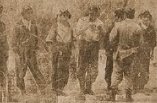

|
j
a v a s c r i p t |
October 31, 1944

Shikishima Kamikaze Unit Before
Self Blasting off Suluan Island on October 25 "Four Warships Blasted Off P.I." A picture shows 5 or 6 young pilots taking a farewell drink prior to a suicidal dash. "Organization of Japanese Death Squadrons Described" — from a Japanese base, Philippines. On October 25, the Commander of this Japanese base called all the pilots to their headquarters and delivered instructions as well as parting words of gratitude. The Commander said: 'Rise or fall, our nation hinges at this moment on this battle. Whether we can push through triumphantly or not depends on each of you. For His Majesty the Emperor, and for your country I ask of you to give me your lives.' "Full blackout from 11:00 P.M. every night" — which is awful tough on the Japanese who are afraid to sleep in the dark. On Sunday, enemy planes "attempted ineffective raids on the Manila area, Clark Field, Legaspi and Bacolod but were driven back. The raiders consisted chiefly of SHIPBOARD planes in flights of from 60 to 100 planes." On Monday, "50 large land-based planes [B-24s] came over Bacolod and 20 over Cebu." It's pretty definite that two large warships were sunk off Cavite — their superstructures are sticking out of the water. During the raid, one said he saw warships going around in circles that didn't get hit. An American pilot dived so low that the explosion of his bomb killed him. The radio conservatively listed one cruiser in Cavite as probably sunk, and another as receiving two direct hits from 1,000-pound bombs. In two days, some 90 Japanese planes were shot down or destroyed on the ground. The Japanese have taken to smoke-screening the Bay early in the morning, figuring the Americans will do to them what they did to Rabaul: strike just before dawn. Manga Avenue is again in a dither and visiting is down to the minimum. Last week the Japanese entered the Alberto home (several houses away from ours) ostensibly to look for a transmitter. Seven men spent over 1-1/2 hours looking for a radio gadget, inspecting even the good doctor's shoes! A half-hour ago, Lombek tipped me off that someone in Manga Avenue is talking too much [we all are] and the Japanese are out to get him. In ten days of fighting in Leyte, Japanese casualties have reached an astonishing 24,000. MacArthur put his own casualties at 3,221. |
|
|
|
|